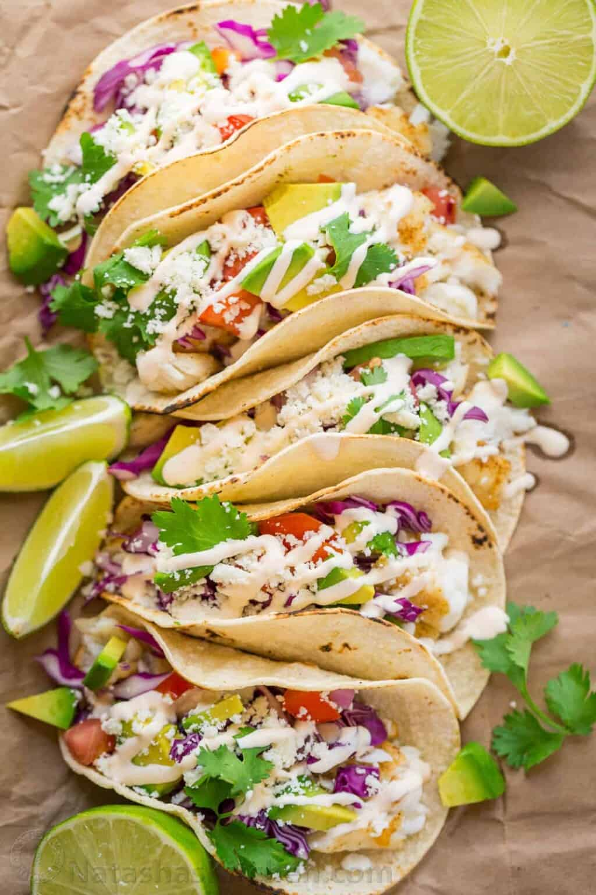

Fish Tacos

Description
This recipe is party sized and can be scaled down to feed a smaller crowd. It was developed by my brother-in-law, Slavik and it has been adopted by pretty much everyone in our family. I have had so many requests to publish the recipe so here it is! It’s an easy, excellent fish tacos recipe. Thank you Slavik for sharing your awesome fish tacos with us. I’m pretty sure it’s impossible to ever get tired of this recipe. P.S. They just happen to be gluten free fish tacos!
Ingredients
- 24 small white corn tortillas
- 1 1/2 lb tilapia
- 1/2 tsp ground cumin
- 1/2 tsp ground cumin
- 1/2 tsp cayenne pepper
- 1 tsp salt
- 1/4 tsp black pepper
- 1 Tbsp Olive oil
- 1 Tbsp unsalted butter
- 1/2 small purple cabbage
- 2 medium avocado, sliced
- 2 roma tomatoes, diced
- 1/2 diced red onion
- 1/2 bunch Cilantro
- 1 cup 4 oz Cotija cheese, grated
- 1 lime cut into 8 wedges
- 1/2 cup sour cream
- 1/2 cup mayo
- 2 Tbsp lime juice
- 1 tsp garlic powder
- 1 tsp Sriracha sauce
Steps
- Line large baking sheet with parchment or silicone liner. In a small dish, combine seasonings: 1/2 tsp cumin, 1/2 tsp cayenne pepper, 1 tsp salt and 1/4 tsp black pepper and evenly sprinkle seasoning mix over both sides of tilapia.
- Lightly drizzle fish with olive oil and dot each piece with butter. Bake at 375 for 20-25 min. To brown edges, broil for 3-5 minutes at the end if desired.
- Combine all Taco sauce ingredients in a medium bowl and whisk until well blended.
- To serve the tacos, toast quickly toast the corn tortillas on a large dry skillet or griddle over medium/high heat.
- To assemble: start with pieces of fish then add remaining ingredients finishing with a generous sprinkle of cotija cheese and finally that awesome taco sauce! Serve with a fresh lime wedge to squeeze over tacos.